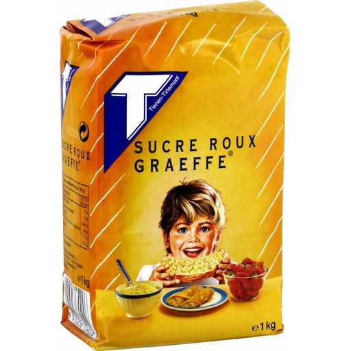

Conseil généraux
Je prend du sucre roux Graeffe a la place du sucre ou semoule le mieux est de le mélanger avec
la farine et après casser les grumaux formé

On est pas obliger de délayer la levure, il paraît, mais moi je la trouve plus efficace comme ca
rajouter un peu de sucre dans le lait avant la levure et bien la mélanger accèlere le processus